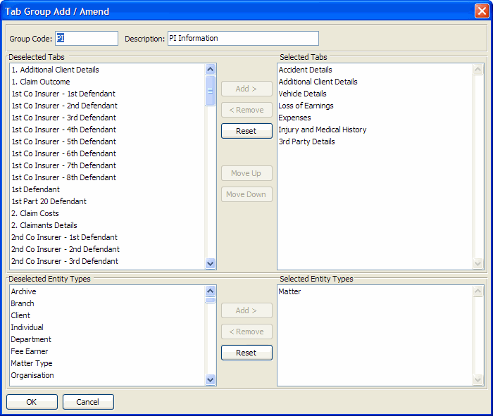

| Field Name | Data Type | No. Extents | Description |
| The type of entity to which this row of additional data is related. This field is used in combination with REFERENCE to uniquely identify the record that this data relates to. Valid values are: "MA" - matter "CL" - client "CO" - contact "OR" - organization "BR" - Branch "USR" - User "DEPT" - Department "FE" - Fee earner MT - Matter type Note that additional data can also be stored against manual archives, but in this case TYPE is “MA” and REFERENCE contains a valid “archive only” matter code beginning with “_AR”. | |||
| The unique identifier of the record that this additional data row relates to. This is used in combination with TYPE to uniquely identify the record related to this additional data row. For example: When TYPE = “MA”, REFERENCE must contain a valid matter code When TYPE = “CO”, REFERENCE contains the string representation of a valid CONTACTS.CON-REFERENCE When TYPE = “OR”, REFERENCE contains the string representation of a valid ORGANISATION.ORG-REFERENCE When TYPE = “CL”, REFERENCE contains a valid client code When TYPE = “BR”, REFERENCE contains a valid branch code When TYPE = “USR”, REFERENCE contains a valid user id When TYPE = “DEPT”, REFERENCE must contain a valid department code When TYPE = “FE”, REFERENCE must contain a valid fee earner code | |||
| Custom tab code (defined in Custom Tab Maintenance) | |||
| Custom tab-array entry number | |||
| Derived: Last Modified Date | |||
| Derived: Last Modified Time (seconds past midnight) | |||
| Derived: Last Modified User Id | |||
| An array of 32 character values, one of each of the custom tab fields defined on this tab. | |||
| Reserved for future use | |||
| Reserved for future use | |||
| Reserved for future use | |||
| Reserved for future use | |||
| Reserved for future use | |||
| Reserved for future use | |||
| Reserved for future use | |||
| Reserved for future use | |||
| Reserved for future use | |||
| Reserved for future use | |||
| Reserved for future use | |||
| Reserved for future use | |||
| Reserved for future use | |||
| Reserved for future use | |||
| Reserved for future use | |||
| Reserved for future use | |||
| Reserved for future use | |||
| Reserved for future use | |||
| Reserved for future use | |||
| Reserved for future use | |||
| Reserved for future use | |||
| Reserved for future use | |||
| Reserved for future use | |||
| Reserved for future use |
| Index Name | Is Primary? | Is Unique? | Word Indexed? | Database Fields |
| AUDIT | MOD-DATE + MOD-TIME | |||
| DATA | DATA | |||
| SPARE-CHAR01 | SPARE-CHAR01 | |||
| SPARE-CHAR02 | SPARE-CHAR02 | |||
| SPARE-DATE01 | SPARE-DATE01 | |||
| SPARE-DATE02 | SPARE-DATE02 | |||
| SPARE-INT01 | SPARE-INT01 | |||
| SPARE-INT02 | SPARE-INT02 | |||
| TAB-CODE | TAB-CODE | |||
| TYPE-REF | TYPE + REFERENCE + TAB-CODE + EXTENT |
ADDDATA contains all custom data values for all entities. Custom tab definitions are assigned to custom tab groups, and these tab groups are defined as being applicable to certain types of entities in PM custom tab maintenance screen. Custom tab groups can then be assigned by the user to particular matters, clients, contacts etc.
All data values are stored as strings even though data entry is "masked" in accordance with the field definition you choose when setting the field up, e.g. as dates or numbers. Note that data can therefore only be retrieved and manipulated from the database as strings when accessing A.ADDDATA or PUB.ADDDATA directly. However by running the utility MaintainCustomViews.r additional database views can be created to access the data for specific custom tabs with fields defined as date values returned as date values when using an ODBC query. The utility creates these new views in your Progress database: the name of each view is "CUSTOM." followed by the custom tab code (e.g. "CUSTOM.MYTAB1").
In all the examples below an additional selection on ADDDATA.TAB-CODE can be applied to select the data belonging to a specific custom tab.
Retrieving custom data linked to a branch:"BR" -> ADDDATA.TYPE
BRANCH.CODE -> ADDDATA.REFERENCE
"USR" -> ADDDATA.TYPE
USR.USER-ID -> ADDDATA.REFERENCE
"DEPT" -> ADDDATA.TYPE
DEPARTMENT.DEPARTMENT-CODE -> ADDDATA.REFERENCE
"FE" -> ADDDATA.TYPE
FEETR.FEE-EARNER -> ADDDATA.REFERENCE
"MA" -> ADDDATA.TYPE
MATDB.MT-CODE -> ADDDATA.REFERENCE
"CL" -> ADDDATA.TYPE
CLIDB.CL-CODE -> ADDDATA.REFERENCE
"CO" -> ADDDATA.TYPE
CONTACTS.REFERENCE-CHAR -> ADDDATA.REFERENCE
"OR" -> ADDDATA.TYPE
ORGANISATION.REFERENCE-CHAR -> ADDDATA.REFERENCE
"MT" -> ADDDATA.TYPE
MATTYPE.MT-TYPE -> ADDDATA.REFERENCE